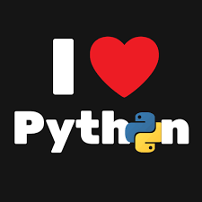

Привет, мой замечательный гость!
Звучит, с одной стороны банально, но моим хобби является программирование на языке python.  Я начинал с простых консольных программ, это было увлекательно (но не слишком интересно иногда бывает:/). Но больше всего меня занимает разработка desktop-приложений с использованием PyQt5 (потихоньку переношу прошлые проекты на PyQt6). Понимая, что на одном месте стоять нельзя, надо двигаться дальше, решил пройти курс по Django и, если получится, совместить это c FullStack. На данный момент активно учусь и работаю, пусть не всегда всё получается, но я стараюсь:) и уверен, что у меня всё получится! И, небольшая цитата, чтобы картинка стала более обтекаемой XD. "Если ты в меньшинстве — и даже в единственном числе, — это не значит, что ты безумен. Есть правда и есть неправда, и, если ты держишься правды, пусть наперекор всему свету, ты не безумен."